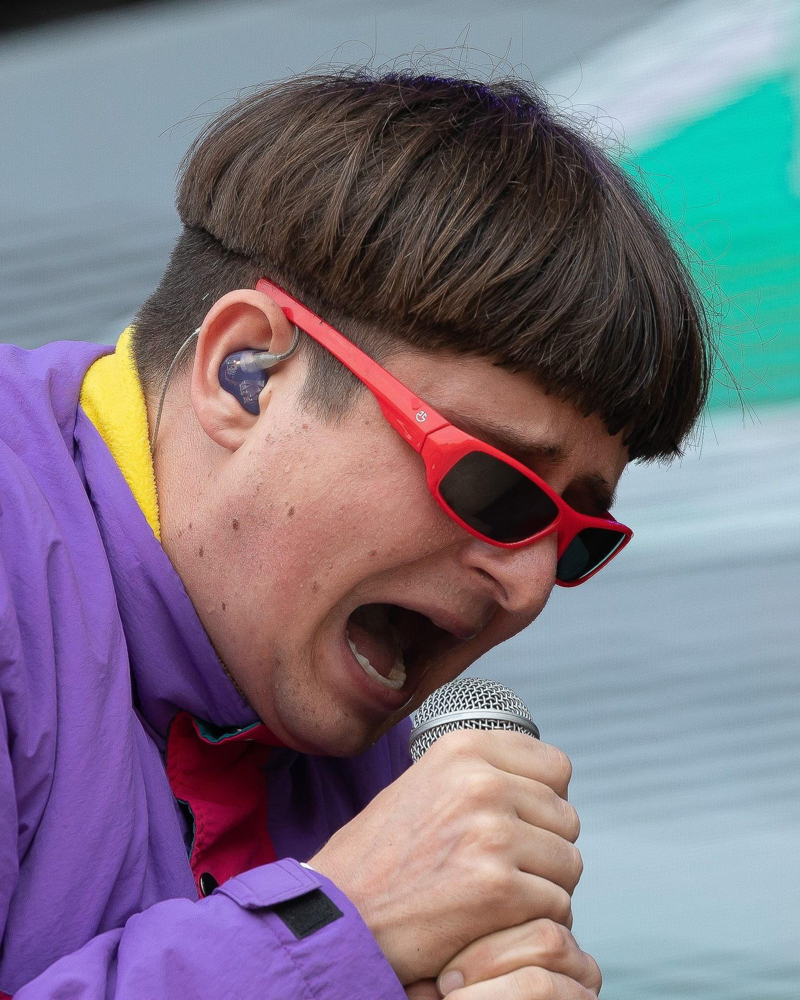
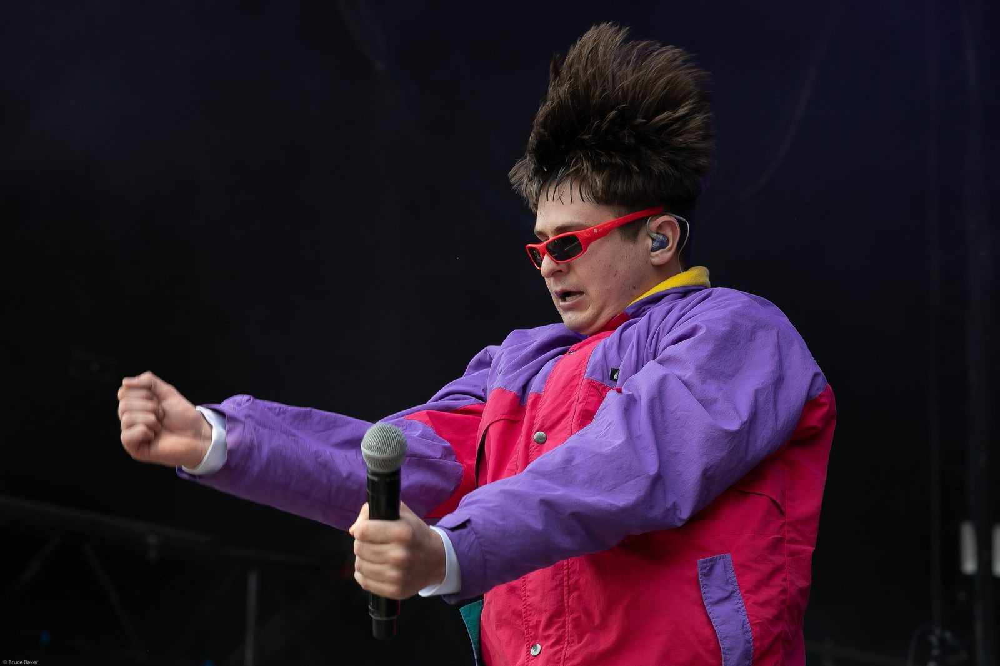
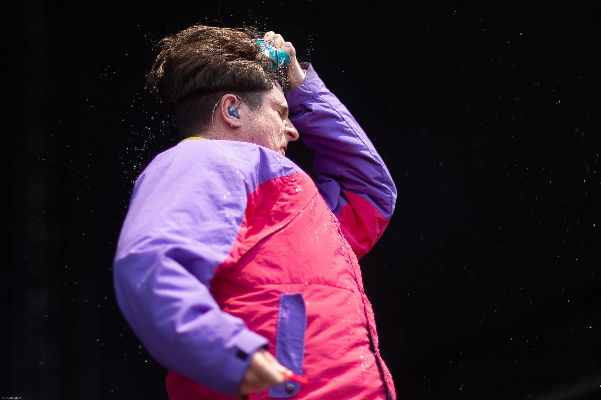
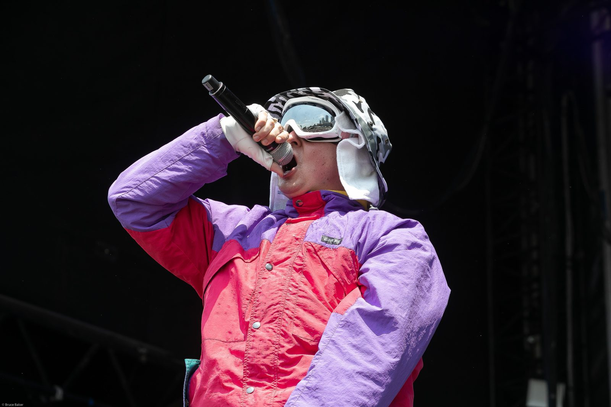
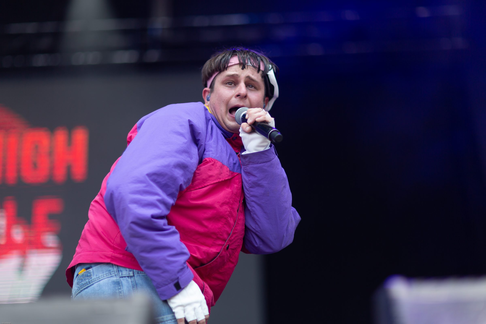

Life Goes On
+400M de reproducciones
Su sencillo más icónico. Un himno sobre seguir adelante pase lo que pase.
Escuchar"I just wanted to make something real"
14 de junio de 2026 · 8:59 AM · Río de Janeiro, Brasil
Oliver Tree Nickell y Gaspi perdieron la vida en un accidente aéreo cuando dos helicópteros colisionaron durante un vuelo sobre Río de Janeiro. Oliver tenía 32 años.

Artista · Director · Visionario
Nacido el 29 de junio de 1993 en Santa Cruz, California. Oliver construyó un universo artístico sin precedentes — donde la música, el cine, la moda y la performance se fusionaban en algo completamente nuevo.
Firmó con Atlantic Records y, para finales de la década, temas como "Hurt", "Alien Boy" y "Cash Machine" lo habían convertido en un fenómeno global con miles de millones de reproducciones. Pero Oliver siempre fue más que números: era un artista que controlaba cada detalle de su obra, desde la dirección de sus videos hasta el diseño de su ropa.
No seguía reglas. Las inventaba.




Los himnos que lo llevaron al mundo entero.
Más allá de los hits: los temas que definieron su arte.
El inicio de todo. El mundo descubrió a Oliver Tree.
Su declaración artística definitiva. Lo feo es hermoso.
Vulnerabilidad sin filtro. Su trabajo más emotivo.
Introspección absoluta. Identidad, soledad y permanencia.
Su último álbum. 17 canciones. La despedida que no sabíamos que era despedida.
Cada era fue una reinvención total — sonido, imagen y actitud.
Bowl cut icónico · Ropa oversized · Scooter · Gafas enormes
La era que lo presentó al mundo. Un personaje absurdo, colorido e imposible de ignorar. Mezcla de indie pop con beats electrónicos — nadie sonaba así.
Chaqueta split rosa/azul · Pantalones gigantes · Stunts extremos
Su pico comercial. La chaqueta bicolor se volvió su firma visual. Videos con acrobacias reales, humor negro y una estética que cruzó del internet al mainstream.
Sombrero vaquero · Estética western · Vulnerabilidad emocional
Oliver se reinventó como un cowboy melancólico. Dejó el humor por la emoción cruda — canciones sobre desamor y fragilidad con producción country-electrónica.
Estilo despojado · Tonos oscuros · Introspección pura
La era más sobria. Oliver se quitó los disfraces y dejó que la música hablara sola. Canciones sobre identidad, soledad y la búsqueda de algo permanente.
Su último capítulo · 17 canciones · La obra final
Su despedida sin saberlo. Un álbum que mezcla todo lo que fue Oliver: energía, emoción, humor y una honestidad brutal. El cierre perfecto de un artista irrepetible.
Nace Oliver Tree Nickell.
Firma con uno de los sellos más importantes del mundo.
Millones de reproducciones. Oliver se convierte en un fenómeno global.
Su álbum debut — una obra que redefinió lo que un artista independiente podía lograr.
Giras internacionales y miles de millones de reproducciones. Oliver se vuelve un fenómeno mundial.
Shows sold-out alrededor del mundo. Oliver en su mejor momento creativo.
Su trabajo más personal. Canciones sobre identidad, soledad y permanencia.
Oliver nos deja. Su legado permanece intacto.
Su música, siempre encendida.
Lo que dejó en quienes lo escuchaban.
Tu música me acompañó en los peores días. Gracias por hacerme sentir menos solo.
Nadie hizo el arte como tú. Rompiste todas las reglas y nos enseñaste a hacerlo también.
"Life goes on" — y por ti, sigue. Tu voz nunca se va a apagar.
Convertiste lo raro en hermoso. Gracias por demostrar que ser diferente está bien.
Crecimos con tus canciones. Hoy las escuchamos distinto, pero te seguimos cantando.
Un visionario irrepetible. Descansa, Oliver. El show nunca termina.
Elige una frase y un color. Descarga tu póster de Oliver.
Enciende una luz en su memoria.
Tu arte fue real. Tu visión fue única. Tu impacto es permanente.
Descansa, Oliver. Nosotros seguimos aquí, escuchándote.